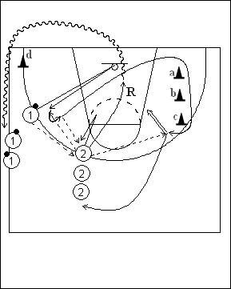

Catégorie : SHOOTS (Sh-012)
Déroulement
- Deux files de joueurs. Une file avec ballons en position d’ailier; une file dans le centre.
- Le premier joueur de la file 1 passe au premier joueur de la file 2. Le premier joueur de la file 1 se démarque, reçoit le ballon en retour, prend immédiatement la position triple menace (square-up), puis redonne le ballon au premier joueur de la file 2 qui s’est démarqué à son tour. Le premier joueur de la file 1 coupe alors et remonte à l’opposé en frôlant les cônes a, b et c (écrans fictifs). Il reçoit la passe du premier joueur de la file 2 et prend un jump shoot.
- 1 va dans la file 2, tandis que 2 réalise le rebond et va dans la file 1 en contournant le cône d.
Coaching points
- Insister sur les éléments tels que : catch the ball, square up, catch and shoot, …
- Veiller également à la qualité des démarquages et du rebond.